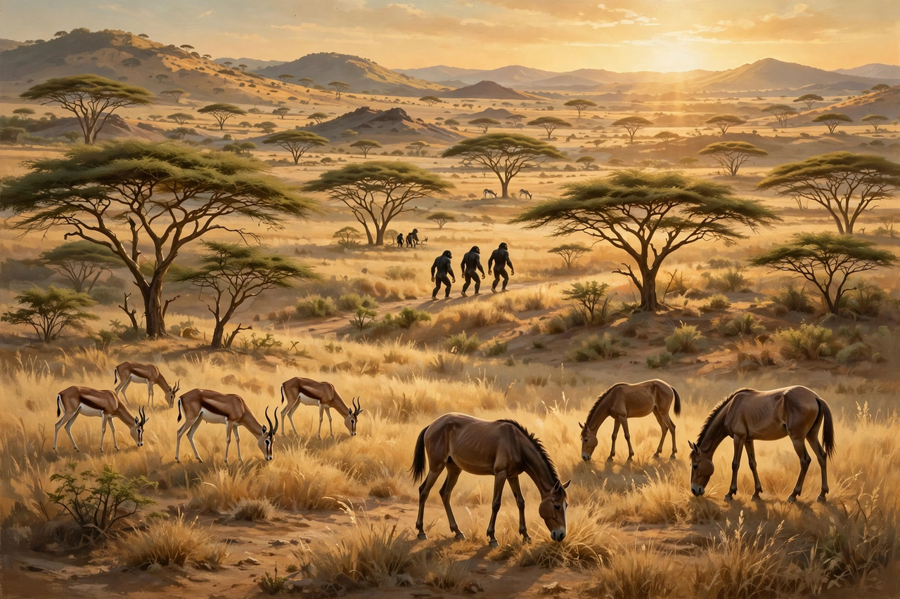

| Pliocene | |
|---|---|
 | |
| Chronology | 5.333 – 2.58 million years ago |
| Preceded by | Miocene |
| Followed by | Pleistocene |
| Subdivisions | Zanclean, Piacenzian |
| Proposed by | Charles Lyell, 1833 |
The Pliocene Epoch is the second epoch of the Neogene Period in the Cenozoic Era, lasting from 5.333 million to 2.58 million years ago. It follows the Miocene and is succeeded by the Pleistocene. The name, coined by Charles Lyell, derives from the Greek words meaning "more recent," reflecting the relatively modern character of its fossil mollusc faunas.
The early Pliocene was warmer than today, with global temperatures roughly 2–3 °C higher and sea levels perhaps 25 metres higher. During the mid-Pliocene Warm Period (about 3.3–3.0 million years ago), atmospheric carbon dioxide stood near 400 parts per million — comparable to modern values — making the epoch a widely used analogue for future climate. Cooling through the late Pliocene, driven partly by the closure of the Isthmus of Panama and the intensification of ocean circulation, culminated in the onset of Northern Hemisphere glaciation around 2.7 million years ago.
Pliocene faunas were largely modern in character. Grasslands expanded, grazing mammals diversified, and the Great American Biotic Interchange began after North and South America were joined. In Africa, australopithecine hominins — including Australopithecus afarensis — walked upright across savanna mosaics; the earliest members of the genus Homo appear near the epoch's end. In the oceans, the giant shark megalodon declined and went extinct around 3.6 million years ago.
The Pliocene is divided into two stages: the Zanclean (5.333–3.600 Ma) and the Piacenzian (3.600–2.58 Ma). Its base is defined by the reflooding of the Mediterranean at the end of the Messinian salinity crisis, and its top by the Gelasian stage boundary that opens the Pleistocene.
Pleistocene · Holocene · Quaternary glaciation · Australopithecus